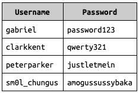
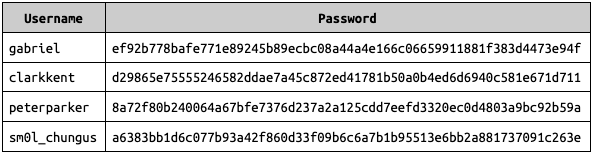
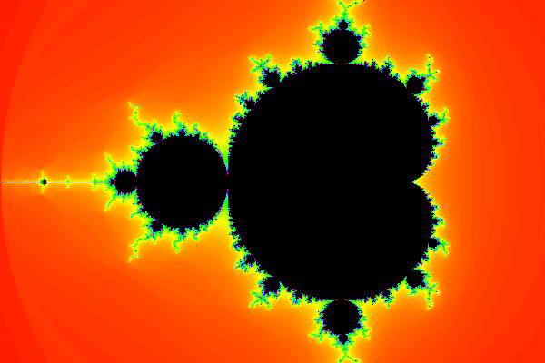
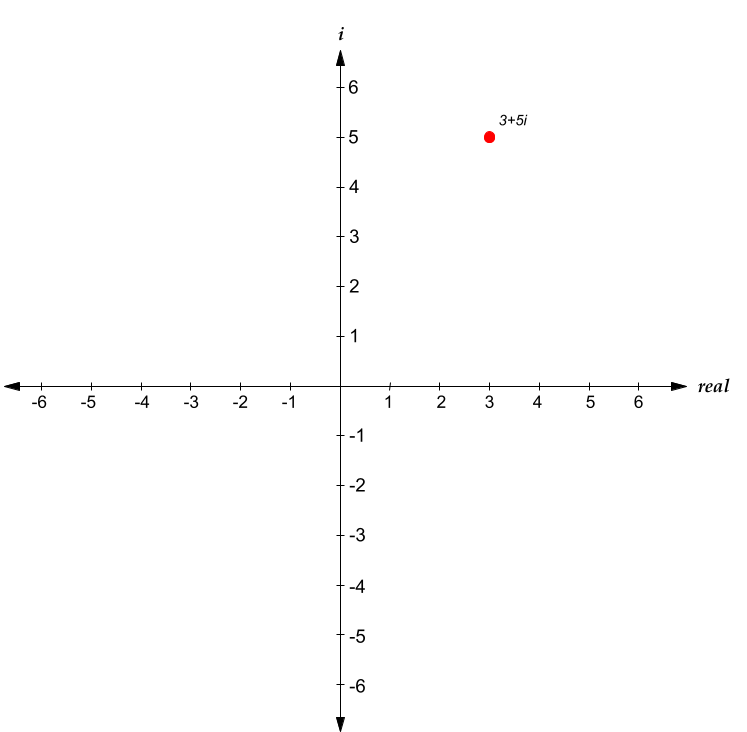
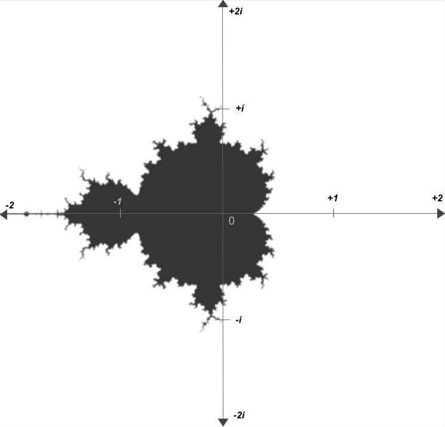
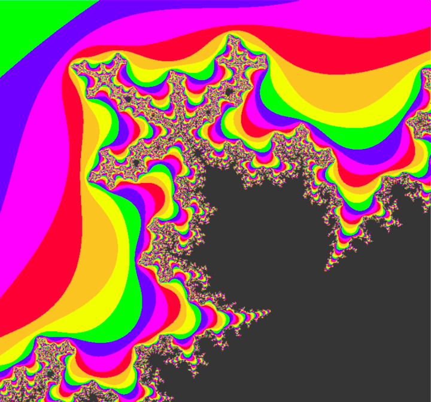

Image credit: https://www.techsolvency.com/passwords/dehashing-reversing-decrypting/
It would be a massive understatement to call authentication important to computing. With computers storing everything from medical records, to social media posts, to private emails, knowing who is trying to access a piece of data is crucial to any system that stores data. Data leaks, often caused by computers misidentifying who was trying to access a piece of data, can have consequences ranging from minor embarrassments to financial disasters.
Because of how important authentication is, computer scientists, companies, and governments have put a lot of effort into creating methods to ensure that only the intended people can access a piece of data.
There are many different methods of authentication. Lately, there have been new(er) inventions such as two-factor authentication, or fingerprint authentication. However, the most common (and oldest) of these methods is a password system. The idea behind a password is simple: store the username and corresponding password of each account in a file. Then, when someone logs into the system, prompt them for their username and password. If this password they entered matches the appropriate password listed in the file, allow them in. Otherwise, do not allow them in.
The data storing the usernames and passwords would look something like this:
 When a user logs in, all the system has to do is compare the password the entered with the password listed under the username they entered in. For example, if the user entered gabriel for the username and password123 for the password, they would be let in to the gabriel account. However, if they instead entered gabriel for the username and password124 for the password, they would not be let in, as password124 does not match password123, the password entry that corresponds to the username gabriel.
This system, on its face, seems to work almost perfectly. By guessing random passwords, it would millions, or even billions of guesses to get most passwords. Even if only 64 characters were allowed in passwords (uppercase and lowercase letters, numbers, and underscore and dash), there would already be \(64^5\) (roughly 1 billion) possible passwords of length 5. Because entering an account without knowing its password would require guessing random passwords, it could take up to 1 billion guesses to enter an account with a password length of just 5. And besides, most systems don't allow you to make more than 5 passwords attempts, let alone 1 billion.
However, this method has a critical flaw. Gaining access to the file storing the passwords would give you access to not only users' personal information -- but also their passwords, which they more than likely also use for other websites and services.
Although it may seem unlikely for someone to gain access to the password file, it is never good to have a single point of failure, especially one as devastating as this. It is because of these flaws that almost no reliable websites use a database that directly lists each person's username and password.
So, you might wonder: if websites don't use the above method, how do they store people's passwords? Well, the answer involves an algorithm called SHA-256.
SHA-256 (sort of) stands for "Secure Hash Algorithm - 256 bits". SHA-256 is an algorithm that takes in an input of any size, and outputs a random-ish 256-bit sequence. For example, converting "gabriel" to SHA-256 yields the following result (when converted to hexadecimal):
gabriel -> ff06535ac1029cca2fc2b86ac7355a7b4e0b8d839fc76b51d30833f4e1347ddc In the above example, "gabriel" is being converted to its binary equivalent, and is then being passed through the SHA-256 function. The result (also known as the hash of "gabriel") is displayed in hexadecimal form. This result isn't super remarkable -- it is, on its face, just a series of 64 random hexadecimal digits. But, notice what happens if I change one character in "gabriel", and run this through SHA-256:
gabriek -> 88446045edff58c90f02556f590841c2145dbcdffe7778808edbf183cbb5a511 We get a completely different result! What makes SHA-256 so amazing is the fact that there is no2 algorithm to reverse this conversion. There is absolutely no correlation between the input to SHA-256, and its output, and so in order to reliably reverse a SHA-256 hash, you literally need to go through every random series of characters, and convert each to SHA-256 to see if the result matches the hash you are trying to reverse. This would take an unfathomably long time. For example, I can give you this output hash:
43bc993ff0f1d2c27c225568d39844db863bb0dcb0299815defa8b3dd43521e1 I generated this by bashing on the home row keys, and it would take literally billions of years on a supercomputer (if not more) to find out exactly what I bashed on my keyboard to generate this output.
Because SHA-256 is effectively irreversible, we can say that SHA-256 is a one-way function.1
But, what does SHA-256 have to do with passwords and authentication? To answer this, let's revisit our password sheet that an imaginary website could use to store user login information.
This system worked by comparing the password a user enters when logging in, to the password written in the table. The problem with our system was that all of the passwords were written directly in the file. However, what if we instead converted all of the passwords to SHA-256, and stored only the hashed versions of the passwords, rather than the original passwords?
Our new password file would be the following:
Here, ef92b778bafe771e89245b89ecbc08a44a4e166c06659911881f383d4473e94f is just password123 when passed through SHA-256, and all of the other passwords are just the SHA-256 version of their original values. Now, if a user types in a password, rather than comparing it to the stored password, we can convert the password the user entered through SHA-256, and then compare the resulting hash with the stored hash!
Take, for example, the account peterparker, and imagine that the user enters the correct password (justletmein). This entered password will be converted to SHA-256; the output of this will be
8a72f80b240064a67bfe7376d237a2a125cdd7eefd3320ec0d4803a9bc92b59aThe program can then check to see if that matches the password listed in the passwords file. Because it does match, the program knows the user entered the correct password. However, imagine that the user entered the wrong password, e.g. justletmein?, which has a question mark at the end. When this password is converted to SHA-256, the output will be
01c308dea0e294b70123dbf9cf041e927f4bf83279d1b6569f85bcc793f53a05The program will then check if this matches with the resulting hash listed in the password file, which it does not. The program therefore knows that the user entered the wrong password, and will not be let in.
Through this system, our program is able to successfully authenticate a user without ever storing their actual password. Because of these benefits, just about every secure website uses some form of hashing for storing user passwords.
Storing only hashed versions of passwords causes some pretty interesting effects. For example, every website that hashes your password (which is hopefully all of them) doesn't actually know what your password is. It's bizarre, but Google does not actually know your password. This is part of the reason that password recovery is such a difficult process.
Another interesting effect of using hashing is that there are actually multiple possible passwords that you can type in, which will log you into an account. Because SHA-256 takes in an input of any size, there are infinite possible distinct inputs to the function. However, because the output is always 256 bits, there are only \(2^{256}\) possible distinct outputs. Because an infinite group of distinct inputs is mapping to a finite group of distinct outputs, there must be multiple distinct inputs that map to the same output. And, because \(\infty\) is significantly larger than \(2^{256}\), we can say almost certainly, that there are infinite possible inputs that map to each output hash. Therefore, there are infinite other possible passwords which you can type in which will log you into your account. However, because only \(\frac{1}{2^{256}}\) of all passwords will convert to the correct hash, it is extremely unlikely that anyone will ever discover any of the other valid passwords into your account. If anyone did, it could be said that SHA-256 is "broken". However, that is very unlikely to happen soon.
Given that SHA-256 is irreversible, it's easy to think that it is completely impossible for anyone to find your password if they're hashed. However, this is only really true if your passwords are strong.
For example, imagine your password is abc123, so its resulting hash is:
6ca13d52ca70c883e0f0bb101e425a89e8624de51db2d2392593af6a84118090If a hacker were to gain access to the passwords file, they will not be able to directly reverse your hash. However, they might have built up a dictionary of common passwords, and they're corresponding hashes. Because abc123 is a common password, if they notice that you have its corresponding hash, they can quickly determine that your password is abc123. So, although SHA-256 may not be easily reversible, it is certainly possible to find someone's unhashed password based on a hashed one.
abc123 is a very easy example, but many other passwords are simply a word followed by a number. This makes it very easy for a computer to go through every possible word followed by every possible 4 or 5-digit number, hashing each password and comparing it to the original hash to find the original password. Programs such as HashCat and John the Ripper have been created to "crack" hashes with incredible (and terrifying) efficiency, which they do by prioritizing searching through passwords that contain real words.
But don't fear! There are two ways which you can prevent against your password getting cracked:
Don't be famous. If you're not famous, it's less likely that a hacker will bother to put a costly amount of effort into cracking your password, because there's simply less on the line with your account. However, the much more sane and obvious solution is to...
Use a strong password. The only reason that hackers can revert people's hashes is because they use real words or expressions in their password. If your password is a random series of uppercase and lowercase letters and numbers, it becomes astronomically difficult to crack your password. A random 9-character password with 64 character choices could take up to \(64^9\), or roughly 18 quadrillion hash attempts. Worried that's not enough security? Add one more character, and your password becomes 64x harder to crack.
At the log-in page, a hacker may only be able to attempt to log into your account five or so times before getting locked out. But if (when?) a service you use experiences a data breach, hackers can have millions, or even billions of attempts at your password. So yes, having a strong password actually is helpful.
1 If you're interested in how the SHA-256 algorithm actually works, you can learn more about it here. I did not go over it in this post because it's dense, and a bit of a tangent.
2 *polynomial-time
If you've lived in the world for a moderate amount of time, there's a good chance that you've seen this:
Image credit: https://jixta.wordpress.com/2015/04/03/mandelbrot-fractal-in-java/
This image is known as the Mandelbrot set, and it's quite possibly the most culturally influential piece of mathematics. But what is it? What is it made of? How is it generated? Why is it so significant?
In order to answer all of the above questions, we first need to talk about imaginary and complex numbers.
For some numbers, taking their square root is trivial. For example, \(\sqrt{4} = 2\), \(\sqrt{9} = 3\), \(\sqrt{25} = 5\), et cetera. For other numbers, their square roots are irrational. For example, \(\sqrt{3}\) can not be written as an integer, or even as a decimal, but rather can only be approximated as roughly 1.732.
There are, however, some numbers that can't be expressed as a "real" number at all. Consider \(\sqrt{-1}\). What would this be equal to? You might instinctively say that it's \(-1\), but this isn't true, because \((-1)^2=1\), not \(-1\); the negatives cancel out. The truth is that there isn't a "real" solution to \(\sqrt{-1}\). If we want to find the value of \(\sqrt{-1}\), or the square root of any other negative number, we essentially need to invent new numbers.
To represent the square root of negative numbers, mathematicians decided that instead of using decimal numbers, they would use the symbol \(i\) to represent \(\sqrt{-1}\). By using \(i\), we can also represent the square root of any negative number. For example, we can represent \(\sqrt{-9}\) as \(3i\), because \(\sqrt{-9} = \sqrt{9} * \sqrt{-1} = 3 * \sqrt{-1} = 3i\). Multiples of \(i\) are known as imaginary numbers, because they don't express a measurable quantity, rather, an "imaginary" construct. Other numbers, that don't require \(i\) to be represented, are known as real numbers.
However, there's more numbers to explore than just imaginary and real numbers. For example, what if we take the sum of an imaginary number and a real number? A number such as \(3 + 5i\) is neither a real nor imaginary number, rather, it's a combination of both real and imaginary numbers, that can't be expressed alone as either. Numbers that can be represented as a sum of a real number and an imaginary number are known as complex numbers. \(3 + 5i\), and \(-7 + 2.5i\), and \(10^9 + \ln(2)i\) are all complex numbers, because they have a real and imaginary component. In addition, a number like \(6\) is also a complex number, because it is the same thing as \(6 + 0i\). In fact, every single number that there is, is a complex number. Complex numbers are the most broad set of numbers that is possible, because they include every number.
But why should we care about complex numbers? What's the purpose of them? Well, one thing that makes complex numbers amazing is what happens when you perform mathematical operations on them.
Adding and subtracting complex numbers is pretty simple, you just add or subtract the real and imaginary components of each number. For example, \((3 + 5i) + (2 + 4i) = 5 + 9i\). In this example, all that's happening is that the real and imaginary components of the first number are being added to the second (\(3 + 2 = 5\) and \(5i + 4i = 9i\)). The same applies for subtracting -- \((3 + 5i) - (2 + 4i) = 1 + i\), because \(3 - 2 = 1\) and \(5i - 4i = 1i\) (or just \(i\)).
However, complex numbers get most interesting when you try to multiply them. Complex numbers are multiplied the same way that binomials are -- by taking the sum of every pair of two terms. For example, imagine multiplying the complex numbers \(2 + 7i\) and \(-3 + 6i\). You could do the following to simplify:
$$(2+7i)(-3+6i)$$$$(2 * -3) + (2 * 6i) + (7i * -3) + (7i * 6i)$$$$-6 + 12i - 21i + 42i^2$$$$-6 - 9i + 42i^2$$
It would appear that \((2+7i)(-3+6i)\) would evaluate to \(-6-9i+42i^2\). But WAIT! If \(i = \sqrt{-1}\), doesn't \(i^2 = -1\)??. This means that we can actually do the following: $$-6-9i+42i^2$$$$-6-9i+42(-1)$$$$-6-9i-42$$$$-48-9i$$
And here, we see that \((2+7i)(-3+6i) = -48-9i\). The nuance of this -- and what makes complex number multiplication so interesting -- is that instead of just adding each component, you essentially end of subtracting the last pair of components, because of the weird properties of \(i\).
The last thing that we need to understand before we can understand the Mandelbrot set is something called the complex plane. We typically represent real numbers on a 1-dimensional number line, something like this:
The number line is an amazing visual representation of real numbers -- you can easily see if one number is larger than another, or how large the difference between two numbers is. However, it's domain is limited only to real numbers. If you wanted to represent all complex numbers, you would need to use two dimensions, one to represent the real component of a complex number, and one to represent the imaginary component of this complex number. This system of representing numbers is known as the complex plane:
(Apologies for my Google Drawings-quality diagrams)
As you can see above, the complex plane has two axis -- a real axis, and an imaginary axis. The real axis is horizontal, and the imaginary axis is vertical. Any complex number can be represented as a point on the complex plane. For example, in the following diagram, \(3+5i\) is represented as a point on the complex plane:
Any complex number is represented in virtually the same way that one would represent Cartesian coordinates on an xy-plane, by plotting any complex number at the intersection of the vertical perpendicular to the real component and the horizontal perpendicular to the imaginary component.
Now that we understand how complex numbers and the complex plane work, we're finally ready to understand the Mandelbrot set! The mandelbrot set is generated by the following process: For each complex number \(c\), we create a series \(z\), where \(z_0=c\). Then, we calculate each next term of \(z\) through the following formula $$z_{n+1}=z_n^2+c$$ If, as \(n \to \infty\), \(z_n\) continues expanding forever, we consider that point to not be in the Mandelbrot set. If \(z_n\) doesn't expand forever, we say that it is part of the mandelbrot set.
That likely made very little sense, so let's look at it in action. We'll let the number \(c = 0.5 + 0.5i\). Then, we'll create a series \(z\), which will be initially equal to \([(0.5+0.5i)]\), or in other words, will have one item, which is equal to \(c\). Then, we'll calculate square of the last number in \(z\), plus the original number \(c\), and this result will be the next item in \(z\). So, the next item in \(z\) will be: $$(0.5+0.5i)^2+(0.5+0.5i)$$ Using complex number multiplication and addition, this simplifies as follows: $$(0.25+0.5i+0.25i^2)+(0.5+0.5i)$$$$(0+0.5i)+(0.5+0.5i)$$$$0.5+i$$ So, the next item of \(z\) is \(0.5+i\). \(z\) is now equal to \([(0.5+0.5i), (0.5+i)]\). To calculate the next item, we run the same process -- calculating the square of the last item of \(z\), plus \(c\) (or plus the first item). So, we would do the following: $$(0.5+i)^2+(0.5+0.5i)$$$$(0.25+i+i^2)+(0.5+0.5i)$$$$(-0.75+i)+(0.5+0.5i)$$$$-0.25+1.5i$$ Here, we have calculated that the next item of \(z\) is \(-0.25+1.5i\), so \(z\) is now equal to \([(0.5+0.5i), (0.5+i), (-0.25+1.5i)]\). If we repeat this process again and again, the next items will be (approximately): $$-1.6875-0.25i$$$$3.285+1.344i$$$$9.487+9.329i$$$$3.468+177.498i$$ It appears that as we repeat this process -- squaring the last number, then adding that to the \(c\) -- the value is growing larger and larger. Indeed, if we continue calculating the next values of \(z\), they will approach infinity. However, this is not true for some other numbers. For example, take \(c=0.1+0.4i\). If we keep on taking the square of the last value and adding it to \(c\), we get the following next terms: $$-0.05+0.48i$$$$-0.128+0.352i$$$$-0.008+0.31i$$$$0.004+0.4i$$$$0.104+0.8i$$$$-0.522+0.565i$$$$0.053-0.19i$$ Interesting! As we keep iterating the recursive formula \(z_{n+1}=z_n^2+c\) where \(c=0.1+0.4i\), the result doesn't appear to be expanding to infinity.
So here's the question: for which values of \(c\) does \(z\) expand forever, and for which values of \(c\) does \(z\) stay bounded? Well if, on the complex plane, we color the values of \(c\) where \(z\) does stay bounded in black, and color the values of \(c\) where \(z\) expands to infinity in white, we get the following:
The image above is essentially a map of which numbers satisfy the property that, when repeatedly squared and added to their original value, do not expand to an infinity. It's certainly not what anyone would've expected.
Here's a higher-definition version, that is colored in accordance with how fast each value of \(c\) expands to an infinity:
All that's being done to generate this image is squaring and adding complex numbers. Maybe you'd expect some form of parabola, or ellipse to be generated. But instead, you get neither. You get a shape that's a sort of cardioid, but bordering other circles on the outside. Off of the circles on the side, there are infinitely spiraling branches. The edge is rough, it never seems to settle. The circle to the left of the main cardioid seems to be connected by an infinitesimally small bridge.
The mandelbrot set, however, goes much deeper than what is shown. Zooming into specific parts of the mandelbrot set can yield results like this:
It's amazing to think that the mandelbrot set is something generated by such a relatively simple equation. The infinite complexity doesn't look like something that a deterministic system could generate. It looks more like a work of art by a mentally-ill ballroom ceiling painter from the Victorian period. I think part of what makes the mandelbrot set so "weird" is that it's unpredictable, but it's not chaotic. It's shape and character vary drastically in different regions, but it's also oddly natural in its shape. There's nothing predictable about the mandelbrot set, but it's all familiar. In fact, you can even find smaller versions of the mandelbrot set that are exactly the same as the original. That's right, the mandelbrot set is even a fractal too! A few of these smaller versions are actually visible in the branches of the above image.
When people say that the mandelbrot set is an example of how math can be visually beautiful, I absolutely agree. The mandelbrot set is an amazing shape to explore for hours. In fact, there are plenty of YouTube videos that are just extended zooms into the mandelbrot set, to an absurdly high precision. But I think that describing the mandelbrot set as aesthetically pleasing overshadows the real beauty of it, which is intellectual. It's intellectual beautiful how perfectly deterministic rules can yield such organic and frankly, bizarre, results.
The mandelbrot set is not the only fractal generated by a recursive function applied to complex numbers, there's plenty of others. For example, the "Julia Set" is a set of fractals that bear many similarities to the mandelbrot set, including the equation used to generate it; but that's a story for another time.
I think it's really sad that the mandelbrot set doesn't get taught more in schools. To a certain extent, the mandelbrot set's existence is an utterly useless piece of information to most people. You most likely will not need to use the mandelbrot set on your next tax returns (it would be very cool if you did though). But this kind of math is also incredibly intellectually enriching. It seriously calls into question everything we know about mathematics, and to a certain extent, the way the universe works. Observing the Mandelbrot set feels a bit like tapping into a part of the universe we weren't supposed to explore. I cannot deny, it is a bit spooky.